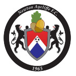
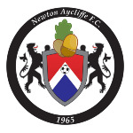
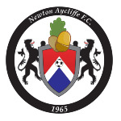
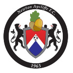
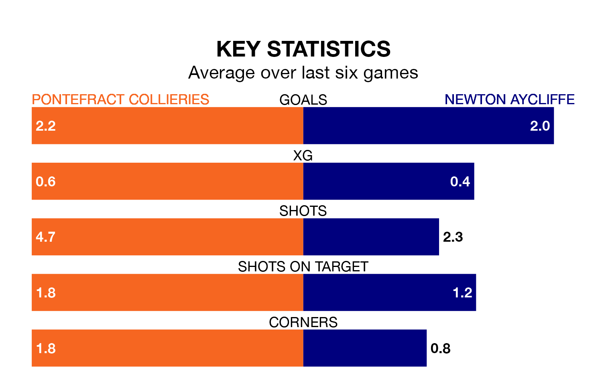

Pontefract Collieries are heavy favourites to keep all three points at home in Tuesday's late kick-off against Newton Aycliffe.
Pontefract Collieries, who sit fifth in the Northern Premier League Division One East with 14 games played, are priced at 1.4 to seal victory.
Sitting eight places and eight points behind them in the table, Newton Aycliffe are 6.0 to win with *Betting Company*, while the draw is at 4.8.
With 29 goals in 14 games so far this season, Pontefract Collieries are scoring more than average in the league with 2.1 goals per game. And they are conceding fewer than average, letting in 17 goals at a rate of 1.2 per game.
Newton Aycliffe, meanwhile, are below average scorers, with 1.5 goals per game, compared to a league average of 1.7. They have conceded 2.1 goals per game.
The home side are in good form in the Northern Premier League Division One East, with four wins and a draw from their last six games.
With three wins and a draw over that period, the visitors' form is worse – they have taken 10 points from 18, compared to Pontefract Collieries' 13.
Pontefract Collieries' last match was on November 28, a 2-1 win against Liversedge.
Newton Aycliffe beat Grantham Town 4-1 last time out, on November 25.
